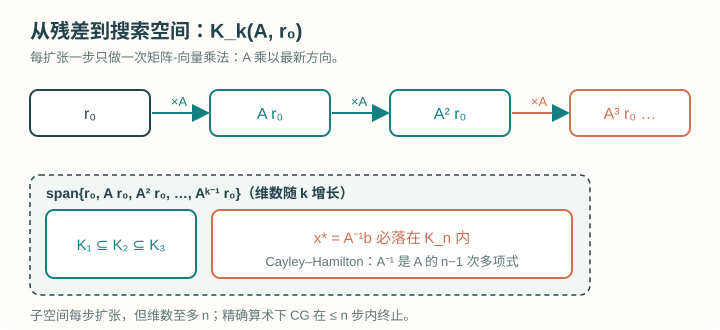
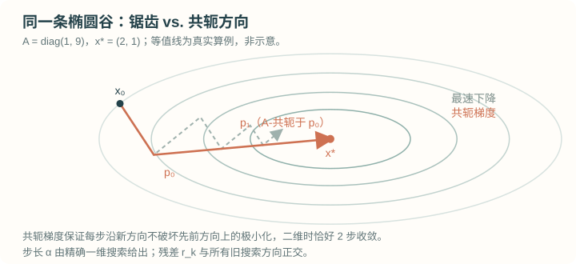
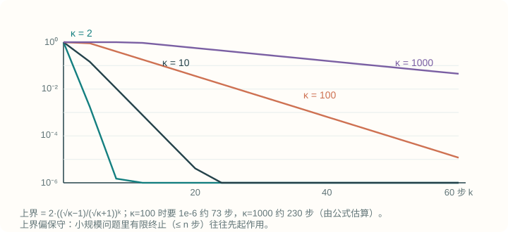

CHAPTER 19 · NUMERICAL ANALYSIS
Krylov 子空间与共轭梯度法
上一章的 Jacobi 与 SOR 只用了矩阵的对角或三角结构，收敛快慢仍由谱半径摆布。共轭梯度换了一条路：它把搜索限制在一个由残差和 A 的幂张成的低维子空间里，并在其中挑出能量范数最小的解——这使它既省内存，又常常几十步就收敛。
01 · 为什么需要 Krylov 子空间
问题设定。给定 A ∈ ℝⁿˣⁿ（本段先假定非奇异）与右端 b，求 x 使 Ax=b。直接法给 LU/Cholesky，代价 O(n³)、存储 O(n²)；当 n 达百万且矩阵稀疏时，因子填充会撑爆内存。迭代法只在每步做一次矩阵-向量乘法 O(nnz)，这是它唯一可能的优势来源。
但第 18 章的 Jacobi、Gauss-Seidel 只用到了对角或三角结构：它们不考虑 A 把向量映到哪里，因此当条件数很大时收敛极慢。Krylov 方法的出发点正是让算法感知 A 的作用——每步做一次 A v，用得到的向量扩张搜索空间。
02 · Krylov 子空间
从初始猜测 x₀ 出发，记初始残差 r₀ = b − A x₀。反复用 A 作用在 r₀ 上，得到一列向量；它们张成的空间就是 Krylov 子空间：
它有一条关键的嵌套性质 K_k ⊆ K_{k+1}，所以每多一步只需一次矩阵-向量乘法 A·(A^{k-1}r₀) 就能扩张子空间——无需 A 的显式结构，只需一个能算 Av 的黑箱。
为什么精确解一定在里面？由 Cayley–Hamilton 定理，A 满足自己的特征多项式，于是 A⁻¹ 可写成 A 的 n−1 次多项式 p(A)。因此 x* = A⁻¹b = p(A)b ∈ K_n(A,b)：
这说明理论上至多 n 步就能取到精确解。注意区分：这是精确算术下的结论，不是承诺浮点实现一定在 n 步内达到机器精度（见第 06 节的失败边界）。

A 乘法；K₁⊆K₂⊆… 的维数至多为 n，因此精确算术下至多 n 步终止。03 · 共轭梯度法原理
适用假设：共轭梯度法（Hestenes–Stiefel, 1952）要求 A 对称正定（SPD）。这一前提既保证了下述二次泛函有唯一极小，也保证了能量范数是一个真正的范数。
对 SPD 矩阵，求解 Ax=b 等价于极小化二次泛函 f(x)=½xᵀAx − bᵀx，因为它的梯度恰是 ∇f=Ax−b=−r。在误差 e=x−x* 的度量上，更自然的量是能量范数（A-范数）：
CG 在每一步 k 从仿射空间 x₀+K_k(A,r₀) 中选取使 ‖e‖_A 最小的 x_k。这个极小化等价于 Galerkin 条件 r_k ⟂ K_k：残差与已生成的所有方向正交。
实现它是靠A-共轭方向（也叫 A-正交）。一组方向 p₀,p₁,… 满足
A-共轭是关键：沿新方向做精确一维搜索时，不会破坏已经在旧方向上做好的极小化。这正是它优于最速下降的地方——最速下降每步都重新弄坏上一步的成果，所以在拉长的椭圆谷里来回锯齿。

A=diag(1,9) 的真实算例）。共轭梯度只走两步 p₀、p₁ 就抵达 x*；最速下降则反复横跳。04 · CG 算法与短递推
CG 的迷人之处在于：它不需要存下整个 K_k，而是用三条短递推保持 A-共轭性。步长由精确一维搜索给出：
新方向由新残差与旧方向组合而成，系数 β_k 保证 p_{k+1} 与所有旧方向 A-共轭：
于是整个算法只需保存 4 个向量 x, r, p, Ap，每步一次矩阵-向量乘法——存储是 O(n)，而不是直接法的 O(n²)。下面是一份最小实现（教学代码，非生产库）：
def conjugate_gradient(A, b, tol=1e-10, max_iter=None):
n = len(b); x = [0.0]*n
r = b[:] # 初始残差 (x0 = 0)
p = r[:]; rr = sum(v*v for v in r)
for k in range(max_iter or n):
Ap = A @ p # 唯一一次矩阵-向量乘法
alpha = rr / (p @ Ap) # 步长 (19.5)
x = x + alpha * p # 更新解
r = r - alpha * Ap # 更新残差
rr_new = r @ r
if rr_new ** 0.5 < tol:
return x, k + 1
p = r + (rr_new / rr) * p # 新方向 (19.6)
rr = rr_new
return x, max_iter or n05 · 收敛性、条件数与预处理
CG 的收敛速度由矩阵的谱条件数控制。对 SPD 矩阵 κ = cond₂(A) = λ_max/λ_min，能量范数下的误差满足标准上界：
收缩因子 (√κ−1)/(√κ+1) 随 κ 增大迅速趋于 1，收敛变慢。按此上界估算把误差降到 10⁻⁶ 所需步数：κ=2 约 9 步、κ=10 约 23 步、κ=100 约 73 步、κ=1000 约 230 步（教学估算，直接由公式得到）。

2·((√κ−1)/(√κ+1))ᵏ 随步数衰减（纵轴为对数）。κ 越大曲线越平，这正是需要预处理的理由。预处理的思路是找一个接近 A 又易求逆的矩阵 M，改为求解等价系统 M⁻¹A x = M⁻¹b。若 M 选得使 M⁻¹A 的条件数远小于 κ(A)，CG 的收敛就会快很多。常见选择：Jacobi（对角）、不完全 Cholesky（IC）、代数多重网格（AMG）。
06 · 实验与失败边界
用对角 SPD 矩阵 A=diag(d) 验证两个断言：有限终止（≤ n 步）与收敛上界估算。选择条件数观察收缩因子与预估步数：
import math
def cg_diag(d, b):
n = len(b); x = [0.0]*n
r = b[:]; p = r[:]; rr = sum(v*v for v in r)
for k in range(n):
Ap = [d[i]*p[i] for i in range(n)]
alpha = rr / sum(p[i]*Ap[i] for i in range(n))
x = [x[i] + alpha*p[i] for i in range(n)]
r = [r[i] - alpha*Ap[i] for i in range(n)]
rr_new = sum(v*v for v in r)
if math.sqrt(rr_new) < 1e-12:
return x, k + 1
p = [r[i] + (rr_new/rr)*p[i] for i in range(n)]
rr = rr_new
return x, n
d = [1 + 99*i/7 for i in range(8)] # κ = 100
b = [1, -2, 3, -1, 2, 0.5, -1.5, 2.5]
x, it = cg_diag(d, b)
x_star = [b[i]/d[i] for i in range(8)]
assert it == 8 # 有限终止：≤ n 步
assert max(abs(x[i]-x_star[i]) for i in range(8)) < 1e-9
print("iterations:", it, "kappa:", d[-1]/d[0])失败边界。第一，理论上的 n 步终止是精确算术结论；浮点下残差正交性会被舍入误差侵蚀，实际可能远多于 n 步，需靠重启动或更好的预处理救场。第二，CG 只在 A 为 SPD 时有能量极小意义；非对称问题应改用 GMRES、BiCGSTAB 等。第三，若把非对称系统转成正规方程 AᵀAx=Aᵀb（CGNR），系数矩阵条件数会变为 κ(AᵀA)=κ(A)²（仅当 A 列满秩），每步代价和条件数都变差。第四，即使 SPD，若 κ 极大，未预处理 CG 仍可能慢到不可用。
原始资料与延伸阅读
本章将文献结论与本文独立构造的数值示例严格区分；κ、收缩因子与上界步数均标注为教学估算。
- SciPy · scipy.sparse.linalg.cg：共轭梯度求解器的接口与容差参数。
- R. Barrett et al., Templates for the Solution of Linear Systems。SIAM，1994；各 Krylov 方法的统一推导与伪代码。
- J. R. Shewchuk, An Introduction to the Conjugate Gradient Method Without the Agonizing Pain。1994；A-共轭与能量极小化的几何直觉。
- Nicholas J. Higham, Accuracy and Stability of Numerical Algorithms。SIAM 第二版，2002；舍入误差对 Krylov 方法正交性的影响。